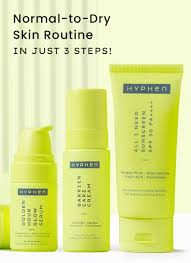
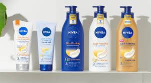
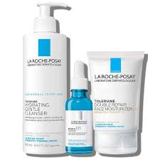

1. Seal in the moisture
Showering and bathing is essential every day, and so is applying both a face moisturizer and a body moisturizer. This isn’t just a skin luxury—water on the skin evaporates into the air, taking the skin’s natural moisturizing barrier with it!
2. Mind your environment
We all know that skin gets drier in colder months, but long days outdoors in the spring and summer breeze can also contribute to skin dryness as much as a blizzard.
3. Layer your skin care
When you go to apply your moisturizer in the morning, give it a boost by applying a serum beforehand so it can help seal it in. Layering skin care properly allows the products to work with each other.
4. Give your hands and feet love
No matter what the weather, hands and feet always tend to be dry. Give these hard-working helpers an essential break every few weeks by coating them in a skin-softening oil then layering over a good, occlusive hand cream or foot cream.
5. Get your beauty sleep
Stress and lack of sleep can be a contributing factor to dehydrated skin. Deep sleep is also the body’s chance to enter “repair mode” and balance itself out for the next day.
1. Wash with soap
Overly harsh soap strips our skin’s natural barrier, altering the skin’s pH balance, and compromising the skin’s barrier integrity. It you notice increased dryness from using soaps, switch to professional cleanser with hydrating ingredients, such as seaweed, that won't dry your skin out.
2. Take long, hot showers
Love long, hot showers but suffer from dry skin? There’s your problem. Washing overly long in hot water strips the skin of essential moisture. Reducing the amount of time spent in the shower, along with reducing the amount of heat we shower with, will all contribute to better balanced skin.
3. Constantly lick your lips
While it’s tough to remember at first, make a conscious effort to stop licking your lips if they feel dry. All that re-wetting and drying of your lips is causing all the dryness and cracking!
4. Over-exfoliate
A lot of people tend to exfoliate too much, thinking the rougher they are the better. Wrong! Overdoing it on exfoliators or peels makes them go from helpful to harmful.
Ceramides
Ceramides are the fatty acids present in the uppermost layer of the epidermis. These essential fatty acids play a crucial role in retaining the water content and improving the barrier functions.
Hyaluronic Acid
It is the holy grail skincare ingredient for dry skin. The antioxidant potential and hydrating properties of hyaluronic acid help attain plump and youthful skin.
Mango Seed Butter
Mango seed butter is an integral ingredient of many ideal skin-moisturising products. It is a rich source of skin vitamins (A & E), minerals, and many other nutrients, which help to rejuvenate your skin naturally.
Glycerin
Glycerin is another effective ingredient to prevent dry skin and boost skin hydration. It not only helps to seal the moisture within your skin but also prevents the loss of moisture content.
Glycolic Acid
Glycolic acid is an Alpha Hydroxy Acid (AHA) that is naturally found in fruits. Owing to its humectant properties, it helps to replenish the moisture levels in dry skin.
Step 1: Cleanser
Cleansing your skin should always be your first step in the morning to remove dirt and create a clean slate. But dry skin types should also find cleansers that add additional moisture to their skin and don't strip away much-needed face oils.
Step 2: Toner
Toners are an optional skincare step that typically remove leftover oil and dirt. For this reason, many toners irritate dry skin and are better for oily, acne-prone skin.
Step 3: Serums
Serums are water-based skin treatments with a high concentration of an active ingredient. People with dry skin can also use popular Vitamin C serums to help brighten skin, fade hyperpigmentation, and reduce UV damage.
Step 4: Eye Cream
Eye creams are also another optional addition to your daytime skincare routine. For dry skin, look for eye creams with hydrating peptides to add moisture to the delicate, often dry under-eye area.
Step 5: Moisturizer
Applying a rich moisturizer is essential to a dry skincare routine. Moisturizers repair a dry skin barrier by increasing your skin's water content and sealing in moisture.
Step 6: Sunscreen
Dry skin needs protected from UV rays, too. Your morning skincare routine should always end with applying sunscreen with a sun protection factor (SPF) of 30 or higher. Dry skin types can use mineral or chemical sunscreen.
Step 1: Cleanser
You can continue using your gentle, oil, or moisturizing cleanser in the evening to remove dirt and makeup from the day.
Step 2: Toner
You can add or skip a toner during your nighttime skincare. You may prefer using a hydrating toner at night if you have sensitive, dry skin.
Step 3: Serum
A nighttime serum is another opportunity to add more hydration to your dry skin and treat fine lines. Again, choose hydrating serums with niacinamide, hyaluronic acid, vitamin E, peptides, or ceramides. These ingredients moisturize and repair dry skin after a long day.
Step 4: Retinol
Vitamin A derivatives like retinoids and retinol (a type of retinoid) help stimulate cell turnover and promote collagen production to help improve overall skin texture, reduce fine lines, and prevent clogged pores. Retinols can often be too irritating and drying for dry skin.
Step 5: Eye Cream
You can continue using your everyday hydrating eye cream at night—or opt for more moisturizing power. At night, using an eye cream with peptides to soothe dry skin is recommended.
Step 6: Moisturizer or Nightcream
Moisturizing at night helps dry skin rehydrate and repair itself. You can stick with your daytime moisturizer or use a heavier night cream. Because these sometimes irritating ingredients are paired with a thick cream, dry skin types can often tolerate them.


